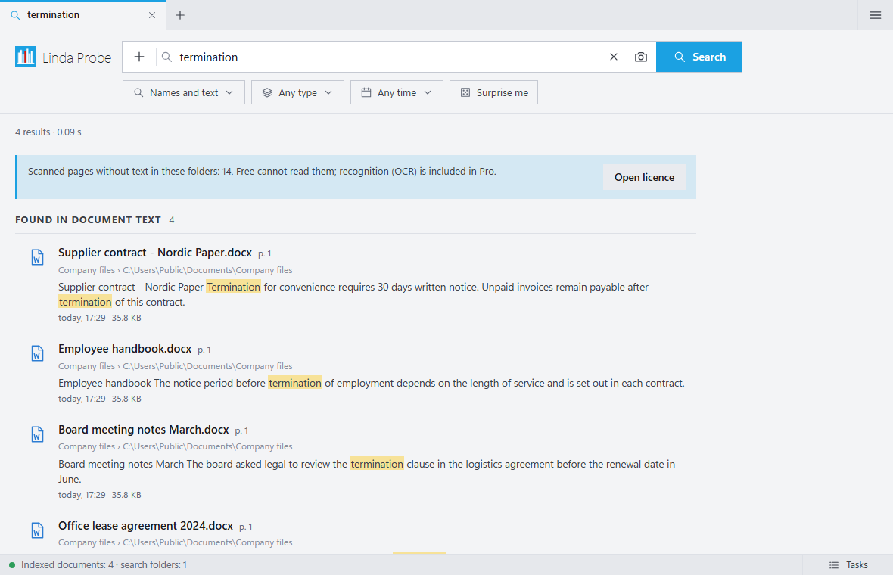
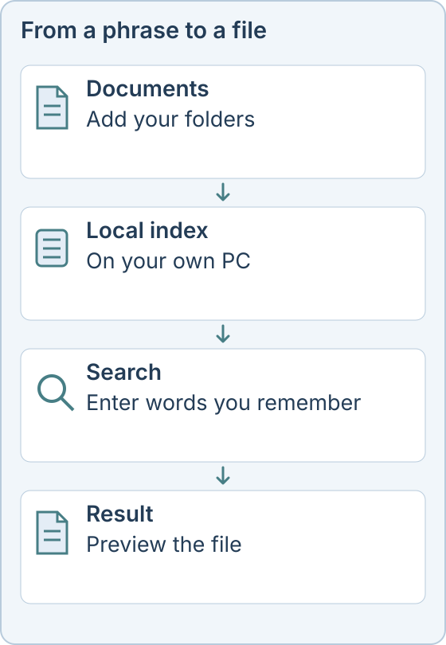

Search inside files on Windows
You remember a phrase from a document, but not what the file is called or where it is. Linda Probe searches both filenames and the text inside documents on your own PC.
What the free version does
Free covers filename search, exact-word content search, folder browsing, previews and manual tags. It has no tariff limit on the number of files or on speed. It is free for personal, non-commercial use, with no time limit.

When you do not remember the words
Probe Pro adds meaning-based search, so you can describe a document in your own words. It also adds OCR for scans, photo search by description or example, and automatic tags.
Which files
Add the folders you need, then search names, contents or both. Filters and search operators narrow results by type, size, date or path, for example ext:pdf or date:2025. Probe searches office documents, PDFs, e-mail files and plain text.
Your files stay on your PC
Search and indexing run locally, and documents are not sent to the operator. Internet is used for downloads, updates and licence checks. The app has no telemetry.

Probe Pro costs $10 once for one person (up to 3 devices), $30 once for up to 10 people, or $500 a year for an organization. Personal, non-commercial use of the free features costs nothing. Taxes and the final total are shown before payment.
Linda Probe runs on Windows 10 and 11 (x64). Optional models download after activation and need internet, free disk space and compatible hardware. The installer is not code-signed yet, so Windows SmartScreen may show a warning.